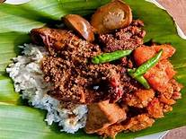

GUDEG KULINER JOGJA
- 📧 vikiamalindo7@gmail.com
 087891340478
087891340478-
 vikiamalindo_
vikiamalindo_
|  | GUDEG KULINER JOGJA |
|
|||||||||
|---|---|---|---|---|---|---|---|---|---|---|---|
Tempat kuliner jogjaDan masih banyak lagi tempat kuliner gudeg di jogja. Biasanya para pendatang banyak yang mencari gudeg sebagai tempat makan kuliner disaat datang di jogja |
Gudeg menjadi salah satu makanan favorit dengan cita rasa cenderung manis. Makanan ini menjadi salah satu ikon kuliner di Yogayakarta. Terdapat beberapa versi terkait pemberian nama gudeg, mulai dari prajurit Mataram hingga salah satu orang Inggris yang tinggal di Jawa, tepatnya Yogyakarta. Prajurit Mataramseorang ahli gizi Pusat Makanan Tradisional Universitas Gajah Mada (UGM) Murdijati Gardjito, menjelaskan bahwa gudeg sudah ada sejak Yogyakarta pertama di bangun atau sejak 1819-1820. Sekaligus menjadi masakan merakyat di Jawa, termasuk Yogyakarta. Sekitar abad ke-16, prajurit Kerajaan Mataram mebuka hutan belantara yang terletak di Kotagede untuk pembangunan kerajaan. Dalam hutan tersebut terdapat banyak pohon nangka dan kelapa. Karena jumlah prajurit cukup banyak, maka nangka dan kelapa dimasak dalam jumlah yang banyak. Proses memasaknya disebut hangudek, artinya mengaduk. Dari kata tersebutlah tercipta nama makanan dengan sebutan gudeg. |